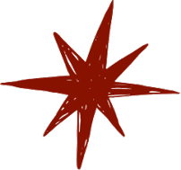
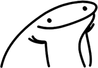
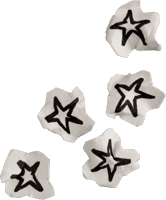
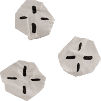

hello, I'm
Zakary Raymond
Biomedical engineer working across tissue engineering, biofabrication, and the wet-lab – hardware boundary.
Currently: seeking an entry-level Research Associate / Scientist I role in biotech (Bay Area & NY), building toward a PhD in regenerative medicine.